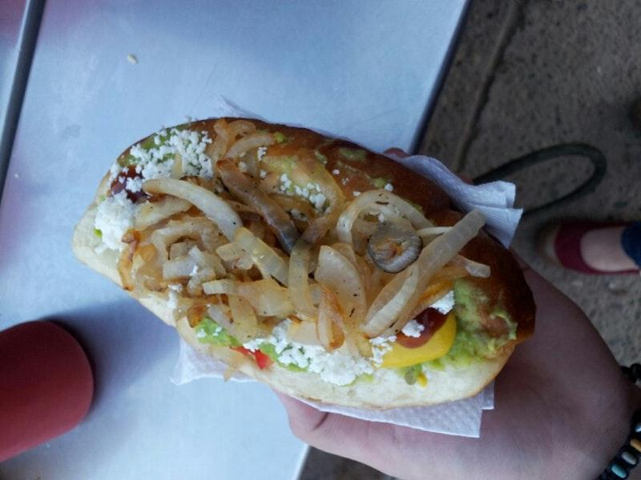
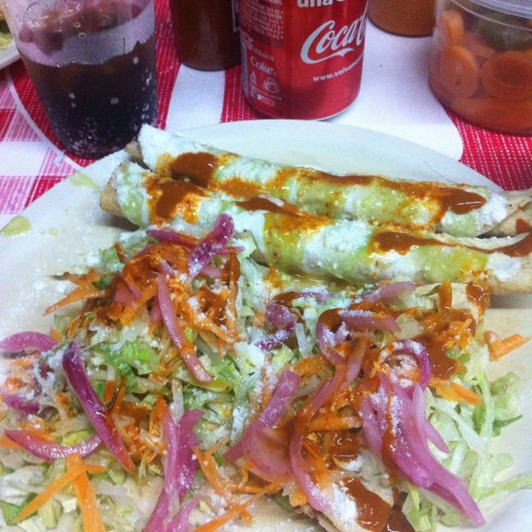
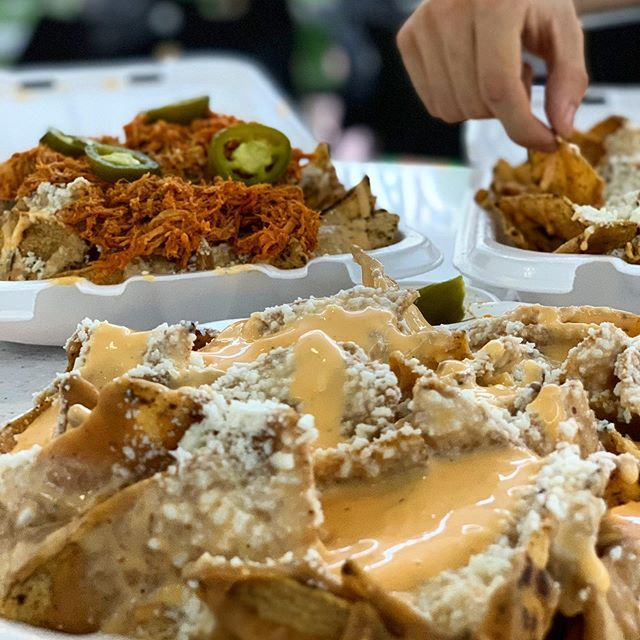

Cuando te entran ganas de cenar algo barato y bueno, tienes la opcion de comprar unos ricos hot dogs en los mochis, bueno bonito y barato
Con mucha variedad de hot dogs, los que mas se antojan son los clasicos
Cuando los sinaloenses se levantan un domingo por la mañana y piensan que van a desayunar, lo primero que les viene a la mente, son unos tacos de adobada
Los mas conocidos de mochis son los tacos rosales
Cuando tienes ganas de unas gorditas o unas flautas, las cenadurias en los mochis no decepcionan
Lo que la gente pide mas en las cenadurias son las tostadas
Los nachos de los mochis les puedo asegurar que son los mejores en todo el mundo, ya que lo preparan de diferente manera y su sabor es unico
Pueden ser cena, botana, comida, lo que quieras, aparte de que son baratos
